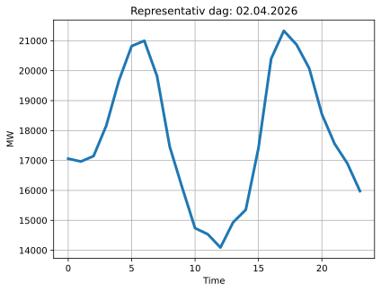
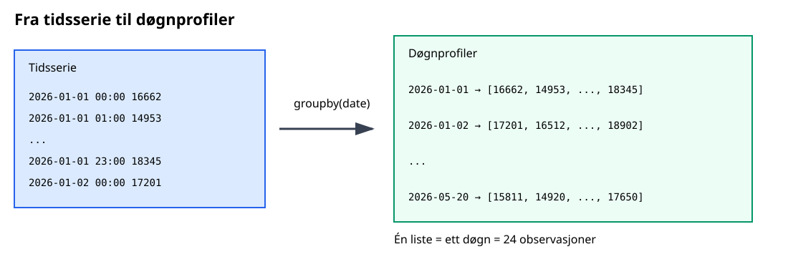
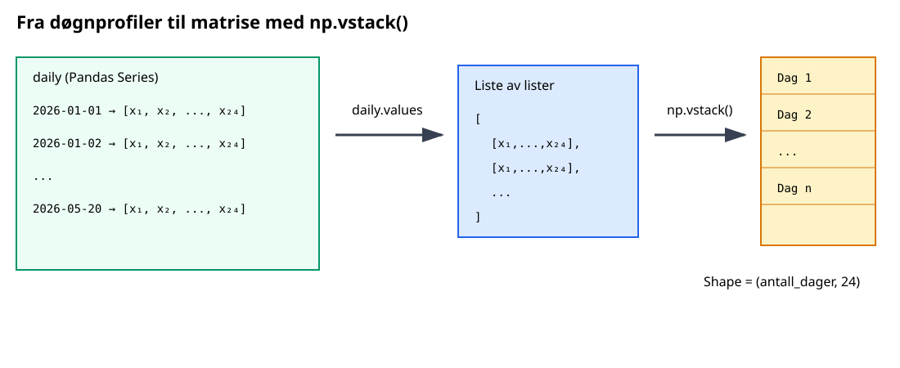
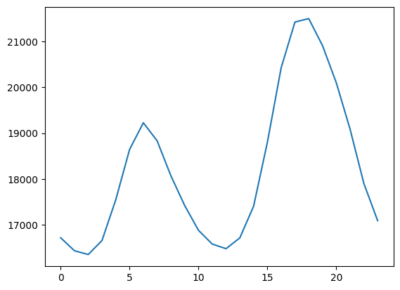
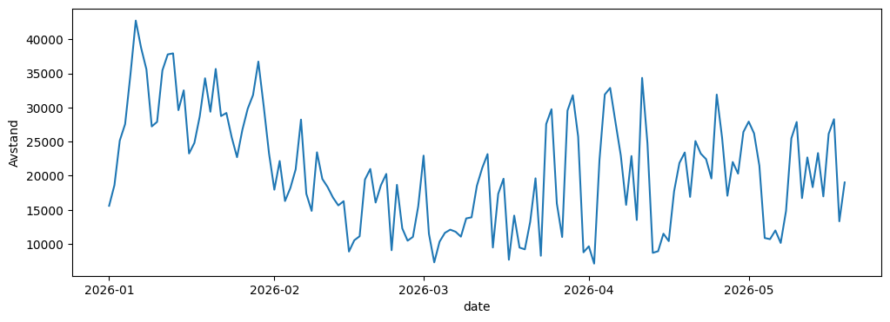
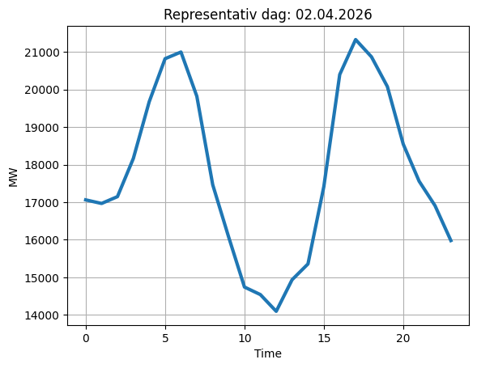

Data og modeller#
For å koble data til modeller skal vi bruke python-bibliotekene pandas og numpy, for å lage datadrevne modeller.
Datasettet kan lastes ned her:
Dataene er lastet ned fra Statnetts side Tall og data fra kraftsystemet og viser timesbaserte verdier av produksjon og forbruk av elektrisk kraft fra 01.01.2026 til 20.05.2026.
Tidligere har vi brukt numpy og pandas seperat, først numpy til å lage en typisk døgnprofil og deretter pandas til å lese data.
Nå skal vi kombinere de til å finne en representativ dag, se Fig. 16, i den angitte dataperioden fra 01.01.2026 til 20.05.2026.

Datadrevet modell#
Representativ dag modellen er en datadrevet modell, fordi den er laget på bakrgrunn av et tallgrunnlag som vi tallbehandler inn i en modell.
Vi kombinerer pandas og numpy funksjoner for å klare dette.
Først gjør vi om fra tidsserie til døgnprofil i pandas som vist i Fig. 17, og deretter til et vertikalt oppsett av hver døgnprofil, se Fig. 18, ved hjelp av numpy biblioteket.


Sjekke dataene#
Vi verfiserer dataene, og bruker read_csv() funksjonen til pandas for å lese og deretter describe-metoden på dataframen df:
import pandas as pd
df = pd.read_csv('../data/load_data.csv')
print(df.describe())
Time(Local) Production Consumption
count 3359 3359 3359
unique 3359 3355 3355
top 20.05.2026 23:00:00 +02:00 18197,64 18346,12
freq 1 2 2
Vi kan sjekke startid og sluttid ned iloc-metoden:
print(df.iloc[0])
print(df.iloc[-1])
Time(Local) 01.01.2026 00:00:00 +01:00
Production 18448,59
Consumption 16662,95
Name: 0, dtype: object
Time(Local) 20.05.2026 23:00:00 +02:00
Production 12985,17
Consumption 18385,77
Name: 3358, dtype: object
print(df.head())
Time(Local) Production Consumption
0 01.01.2026 00:00:00 +01:00 18448,59 16662,95
1 01.01.2026 01:00:00 +01:00 18693,66 14953,24
2 01.01.2026 02:00:00 +01:00 18639,68 14298,07
3 01.01.2026 03:00:00 +01:00 18502,66 13254,81
4 01.01.2026 04:00:00 +01:00 18458,45 12678,51
Litt repetisjon#
Vi starter med å lese csv-filen med pd.read_csv(). Vi lager kolonnen df['Time(UTC)'] med pd.to_datetime(). Vi vet formatet fra da vi leste pd.read_csv() og setter utc=True:
format="%d.%m.%Y %H:%M:%S %z",
og setter
utc=True
pd.to_datetime()#
pd.to_datetime() ofte et av de første stegene i tidsserieanalyse med Pandas.
Når en tidskolonne er konvertert til datetime kan du:
Kode |
Forklaring |
|---|---|
|
# velg dato |
|
# grupper per time |
|
# hent år |
|
# hent måned |
Format#
Når pd.to_datetime() kjøres med utc=True, blir tidsstemplene i df['Time(Local)'] konvertert til UTC (Coordinated Universal Time). Resultatet er en timezone-aware datetime-kolonne. Dersom tidsstemplene inneholder tidssoneinformasjon, for eksempel +02:00, blir tidspunktet automatisk omregnet til UTC (+00:00).
For eksempel at lokal tid:
2026-01-01 12:00:00+02:00
konvertert til UTC:
2026-01-01 10:00:00+00:00
Den nye kolonnen df['Time(UTC)'] brukes deretter som indeks ved hjelp av metoden set_index().
import pandas as pd
df = pd.read_csv("../data/load_data.csv")
df["Time(UTC)"] = pd.to_datetime(
df["Time(Local)"],
format="%d.%m.%Y %H:%M:%S %z",
utc=True
)
df = df.set_index("Time(UTC)")
Det gir oss følgende dataframe:
print(df.head())
Time(Local) Production Consumption
Time(UTC)
2025-12-31 23:00:00+00:00 01.01.2026 00:00:00 +01:00 18448,59 16662,95
2026-01-01 00:00:00+00:00 01.01.2026 01:00:00 +01:00 18693,66 14953,24
2026-01-01 01:00:00+00:00 01.01.2026 02:00:00 +01:00 18639,68 14298,07
2026-01-01 02:00:00+00:00 01.01.2026 03:00:00 +01:00 18502,66 13254,81
2026-01-01 03:00:00+00:00 01.01.2026 04:00:00 +01:00 18458,45 12678,51
Med DateTimeIndex blir det lettere å håndtere overgang fra sommertid til vintertid
print(df.loc["2026-03-29 00:00":"2026-03-29 04:00"])
Time(Local) Production Consumption
Time(UTC)
2026-03-29 00:00:00+00:00 29.03.2026 01:00:00 +01:00 15901,94 14367,04
2026-03-29 01:00:00+00:00 29.03.2026 03:00:00 +02:00 15777,03 14486,69
2026-03-29 02:00:00+00:00 29.03.2026 04:00:00 +02:00 15830,73 15263,96
2026-03-29 03:00:00+00:00 29.03.2026 05:00:00 +02:00 15859,24 15227,20
2026-03-29 04:00:00+00:00 29.03.2026 06:00:00 +02:00 15958,54 15611,91
Etter konvertering til DateTimeIndex leses tabellens datatyper fortsatt som objekter.
df["Consumption"] = df["Consumption"].str.replace(",", ".").astype(float)
print(df.head())
Time(Local) Production Consumption
Time(UTC)
2025-12-31 23:00:00+00:00 01.01.2026 00:00:00 +01:00 18448,59 16662.95
2026-01-01 00:00:00+00:00 01.01.2026 01:00:00 +01:00 18693,66 14953.24
2026-01-01 01:00:00+00:00 01.01.2026 02:00:00 +01:00 18639,68 14298.07
2026-01-01 02:00:00+00:00 01.01.2026 03:00:00 +01:00 18502,66 13254.81
2026-01-01 03:00:00+00:00 01.01.2026 04:00:00 +01:00 18458,45 12678.51
print(df.dtypes)
Time(Local) object
Production object
Consumption float64
dtype: object
Index - datetime#
Vi vil finne den mest representative døgnprofilen i datasettet og vi ser nå styrken til Datetimeindex, ved at vi kan lage en døgnmatrise. Vi har tidliger sett at vi kan hente ut tidsforståelse direkte ved Datetimeindex. Vi kan legge til dette som en kolonne i vår dataframe ved å bruke tilegge df.index.date et df['kolonnenavn']:
import numpy as np
df['date'] = df.index.date
df['year'] = df.index.year
print(df.head(3))
Time(Local) Production Consumption \
Time(UTC)
2025-12-31 23:00:00+00:00 01.01.2026 00:00:00 +01:00 18448,59 16662.95
2026-01-01 00:00:00+00:00 01.01.2026 01:00:00 +01:00 18693,66 14953.24
2026-01-01 01:00:00+00:00 01.01.2026 02:00:00 +01:00 18639,68 14298.07
date year
Time(UTC)
2025-12-31 23:00:00+00:00 2025-12-31 2025
2026-01-01 00:00:00+00:00 2026-01-01 2026
2026-01-01 01:00:00+00:00 2026-01-01 2026
Vi har nå fått en egen kolonne som gir oss datoen eksplisitt. Deretter kan vi gruppere data etter dato og samle alle “Consumption”-verdier per dag i en liste.
Grupper de daglige verdiene#
Tidligere har vi brukt .resample()-metoden til å gruppere etter faste tidsintervaller
analyse_måned = df['Consumption'].resample("ME").mean()
print(analyse_måned.head())
Time(UTC)
2025-12-31 00:00:00+00:00 16662.950000
2026-01-31 00:00:00+00:00 23831.608185
2026-02-28 00:00:00+00:00 20055.223557
2026-03-31 00:00:00+00:00 16608.114866
2026-04-30 00:00:00+00:00 14597.928236
Freq: ME, Name: Consumption, dtype: float64
Nå skal vi bruke .groupby()-metoden til å gruppere på date-kolonnen vi lagde med DateTimeIndex.
daily = df.groupby('date')['Consumption'].apply(list)
print('Daglige tidsserier:',daily.head(4))
Daglige tidsserier: date
2025-12-31 [16662.95]
2026-01-01 [14953.24, 14298.07, 13254.81, 12678.51, 12706...
2026-01-02 [13826.33, 12743.11, 12786.86, 12647.35, 12850...
2026-01-03 [21572.64, 20710.6, 20344.44, 19724.81, 20111....
Name: Consumption, dtype: object
Men vent! Ikke alle verdiene har 24 timers døgnprofiler. La oss sjekk hvilke daily som ikke inneholder (!=) 24 verdier:
incomplete_days = daily.index[daily.apply(len) != 24]
print(incomplete_days)
Index([2025-12-31, 2026-05-20], dtype='object', name='date')
DateTimeIndex gjør det lett å sjekke disse tidsrommene nærmere:
df.loc['2025-12-31']
| Time(Local) | Production | Consumption | date | year | |
|---|---|---|---|---|---|
| Time(UTC) | |||||
| 2025-12-31 23:00:00+00:00 | 01.01.2026 00:00:00 +01:00 | 18448,59 | 16662.95 | 2025-12-31 | 2025 |
df.loc['2026-05-19 20':'2026-05-20 01']
| Time(Local) | Production | Consumption | date | year | |
|---|---|---|---|---|---|
| Time(UTC) | |||||
| 2026-05-19 20:00:00+00:00 | 19.05.2026 22:00:00 +02:00 | 13941,80 | 17396.93 | 2026-05-19 | 2026 |
| 2026-05-19 21:00:00+00:00 | 19.05.2026 23:00:00 +02:00 | 13479,56 | 15295.22 | 2026-05-19 | 2026 |
| 2026-05-19 22:00:00+00:00 | 20.05.2026 00:00:00 +02:00 | 12920,64 | 14881.17 | 2026-05-19 | 2026 |
| 2026-05-19 23:00:00+00:00 | 20.05.2026 01:00:00 +02:00 | 12626,67 | 14265.45 | 2026-05-19 | 2026 |
| 2026-05-20 00:00:00+00:00 | 20.05.2026 02:00:00 +02:00 | 12444,24 | 13891.66 | 2026-05-20 | 2026 |
| 2026-05-20 01:00:00+00:00 | 20.05.2026 03:00:00 +02:00 | 12215,32 | 13679.98 | 2026-05-20 | 2026 |
Vi får tilbake en pandas Series hvor hver verdi er en Python-liste
print(type(daily))
len(daily)
<class 'pandas.core.series.Series'>
141
Beholder kun komplette døgnlastprofiler, kun de seriene som har (daily.apply(len) == 24) 24 timesverdier
daily = daily[daily.apply(len) == 24]
print(daily.head(4))
len(daily)
date
2026-01-01 [14953.24, 14298.07, 13254.81, 12678.51, 12706...
2026-01-02 [13826.33, 12743.11, 12786.86, 12647.35, 12850...
2026-01-03 [21572.64, 20710.6, 20344.44, 19724.81, 20111....
2026-01-04 [22995.68, 22691.57, 22255.31, 21886.91, 22266...
Name: Consumption, dtype: object
139
Vi gjør om til matriseverdier ved .values-attributtet som returnerer et numpy.array()
print(daily.values[0:2])
[list([14953.24, 14298.07, 13254.81, 12678.51, 12706.47, 12967.66, 13289.36, 13593.11, 14009.36, 14417.61, 15096.71, 15274.79, 15438.74, 15905.07, 16701.68, 17356.46, 17827.26, 18362.0, 18243.72, 18017.53, 17380.07, 16740.26, 15974.65, 14821.37])
list([13826.33, 12743.11, 12786.86, 12647.35, 12850.44, 14353.17, 16450.39, 18967.05, 20141.75, 20267.21, 19592.5, 20247.72, 20332.97, 21395.35, 23500.14, 24447.04, 24701.44, 24840.75, 24320.26, 23539.46, 23506.18, 22675.59, 21693.33, 22115.9])]
Numpy funksjonen .vstack() stacker verdiene vertikalt i en 2D matrise med shape = (antall dager, antall observasjoner per dag). Nå er hver rad én døgnprofil og hver kolonne én time i døgnet.
# Konverter til array
X = np.vstack(daily.values)
print(X[0:2])
print(X.shape)
[[14953.24 14298.07 13254.81 12678.51 12706.47 12967.66 13289.36 13593.11
14009.36 14417.61 15096.71 15274.79 15438.74 15905.07 16701.68 17356.46
17827.26 18362. 18243.72 18017.53 17380.07 16740.26 15974.65 14821.37]
[13826.33 12743.11 12786.86 12647.35 12850.44 14353.17 16450.39 18967.05
20141.75 20267.21 19592.5 20247.72 20332.97 21395.35 23500.14 24447.04
24701.44 24840.75 24320.26 23539.46 23506.18 22675.59 21693.33 22115.9 ]]
(139, 24)
X[0:2]
array([[14953.24, 14298.07, 13254.81, 12678.51, 12706.47, 12967.66,
13289.36, 13593.11, 14009.36, 14417.61, 15096.71, 15274.79,
15438.74, 15905.07, 16701.68, 17356.46, 17827.26, 18362. ,
18243.72, 18017.53, 17380.07, 16740.26, 15974.65, 14821.37],
[13826.33, 12743.11, 12786.86, 12647.35, 12850.44, 14353.17,
16450.39, 18967.05, 20141.75, 20267.21, 19592.5 , 20247.72,
20332.97, 21395.35, 23500.14, 24447.04, 24701.44, 24840.75,
24320.26, 23539.46, 23506.18, 22675.59, 21693.33, 22115.9 ]])
(14953.24+13826.33)/2
14389.785
(X[0,0]+X[1,0])/2
np.float64(14389.785)
eller
np.mean([X[0,0],X[1,0]])
np.float64(14389.785)
example_mean = X[0:2].mean(axis=0)
print(example_mean)
[14389.785 13520.59 13020.835 12662.93 12778.455 13660.415 14869.875
16280.08 17075.555 17342.41 17344.605 17761.255 17885.855 18650.21
20100.91 20901.75 21264.35 21601.375 21281.99 20778.495 20443.125
19707.925 18833.99 18468.635]
Gjennomsnittsdøgn#
Vi finner gjennomsnittsdøgnet, og gjenomsnittsdøgnprofil
# Gjennomsnittsdøgn
import matplotlib.pyplot as plt
mean_profile = X.mean(axis=0)
#print(mean_profile)
plt.plot(mean_profile)
[<matplotlib.lines.Line2D at 0x291cded6530>]

X[0]-mean_profile
array([-1762.05992806, -2134.33964029, -3094.54467626, -3976.78366906,
-4839.47517986, -5673.82215827, -5937.25942446, -5239.32647482,
-4058.99971223, -3001.76215827, -1781.89251799, -1303.40884892,
-1038.01884892, -807.02215827, -701.44438849, -1443.43697842,
-2599.19956835, -3063.88374101, -3257.3742446 , -2894.51071942,
-2720.51064748, -2347.15043165, -1927.17748201, -2267.62280576])
Vi bruker en Euklids distanse \(\sqrt{x^2_1+x^2_s+...+x^2_n}\) for å finne hvert døgns absolutte avstand til gjennomsnittet. np.linalg.norm() måler lengden til en vektor. Her finner vi lengden hver døgnprofil ligger fra gjennomsnittsprofilen:
np.linalg.norm(X[0:2]-mean_profile, axis=1)
array([15586.15856527, 18624.93192142])
Vi finner avstand for hver døgnprofil og plotter dette. Siden daily.index er en DatetimeIndex, kan Matplotlib automatisk forstå at x-aksen representerer datoer og vise måneder og år på en fornuftig måte.
distances = np.linalg.norm(X-mean_profile, axis=1)
dist_series = pd.Series(distances, index=daily.index)
dist_series.plot(figsize=(12, 4))
plt.ylabel("Avstand")
plt.show()

Vi bruker numpys argmin() funksjon til å gi oss raden (altså det spesifikke) døgnet med den minste euklidske avstand til gjennomsnittet
np.argmin(distances)
np.int64(91)
Så kan Datetimeindex gi oss nøyaktig dato
daily.index[np.argmin(distances)]
datetime.date(2026, 4, 2)
Hele scriptet og plot#
import numpy as np
# df: time-serie med load
# index = datetime
# Lag daglig matrise (hver dag = 24 verdier)
df['date'] = df.index.date
daily = df.groupby('date')['Consumption'].apply(list)
# Fjern dager som ikke har 24 timer
daily = daily[daily.apply(len) == 24]
# Konverter til array
X = np.vstack(daily.values)
# Gjennomsnittsdøgn
mean_profile = X.mean(axis=0)
# Finn dag med minst avvik (minste norm)
distances = np.linalg.norm(X - mean_profile, axis=1)
# Velg mest representative dag
idx = np.argmin(distances)
rep_profile = X[idx]
rep_date = daily.index[idx]
print("Representativ dag:", rep_date)
Representativ dag: 2026-04-02
import matplotlib.pyplot as plt
t = np.arange(24)
plt.plot(t, rep_profile, linewidth=3)
plt.xlabel("Time")
plt.ylabel("MW")
plt.title(f"Representativ dag: {rep_date.strftime('%d.%m.%Y')}")
plt.grid(True)
plt.show()
